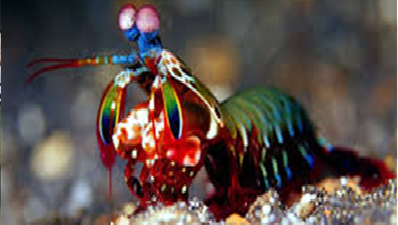

СЕМЕЙСТВА Ротоногие
ГЛУБИНАот 2 до 70 метров. Тропические виды часто встречаются на глубине 3–40 метров, а некоторые виды могут погружаться до 950+ метров
КОГДА ОТКРЫЛИ:их описал французский зоолог Пьер Андре Латрей в 1817 году
ТИП ПИТАНИЯ:морской хищник-засадчик. Питается живой добычей: ракообразными, моллюсками, рыбой
Уникальная охота: Рак-богомол наносит удар хватательными ногочелюстями за 2 миллисекунды, что сопоставимо со скоростью пули. Встречаются два типа: «разбиватели» (разбивают раковины) и «копьеносцы» (пронзают мягкую добычу)
Сверхзрение: Глаза имеют 12 цветовых рецепторов (у людей — 3), видят ультрафиолет и поляризованный свет.
Агрессивная территориальность: Защищают свои норы, устраивая драки, в которых бьют друг друга по бронированному хвосту (тельсону)
Социальность и интеллект: Способны запоминать соседей, используют флуоресцентные узоры для коммуникации и могут жить парами до 20 лет.
Уход за собой: Во время линьки (раз в 2 месяца) 9 дней прячутся в норе, запечатывая вход.

наверх